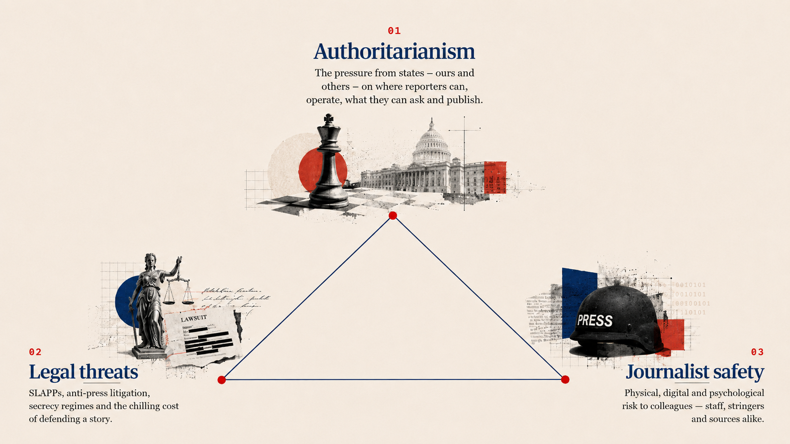
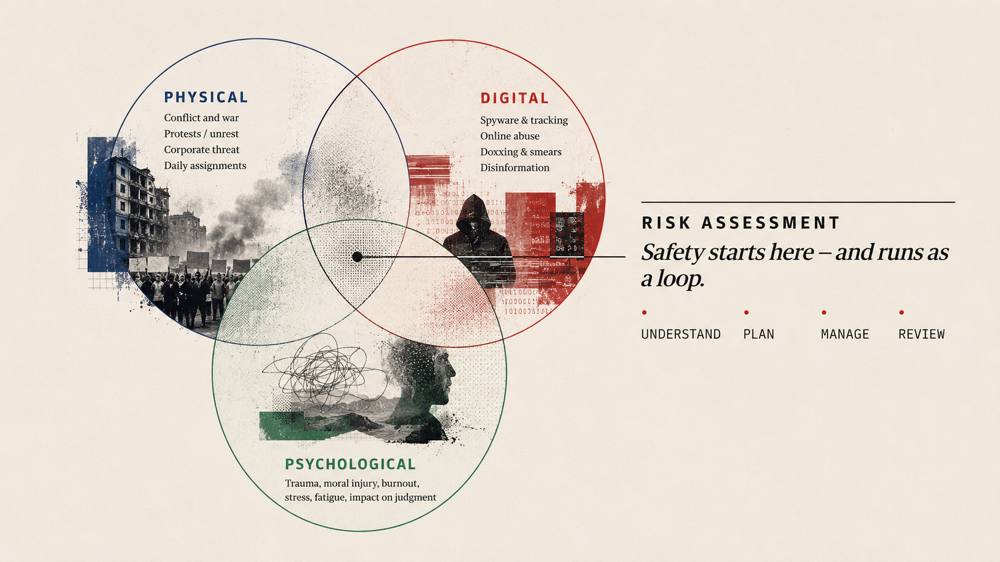
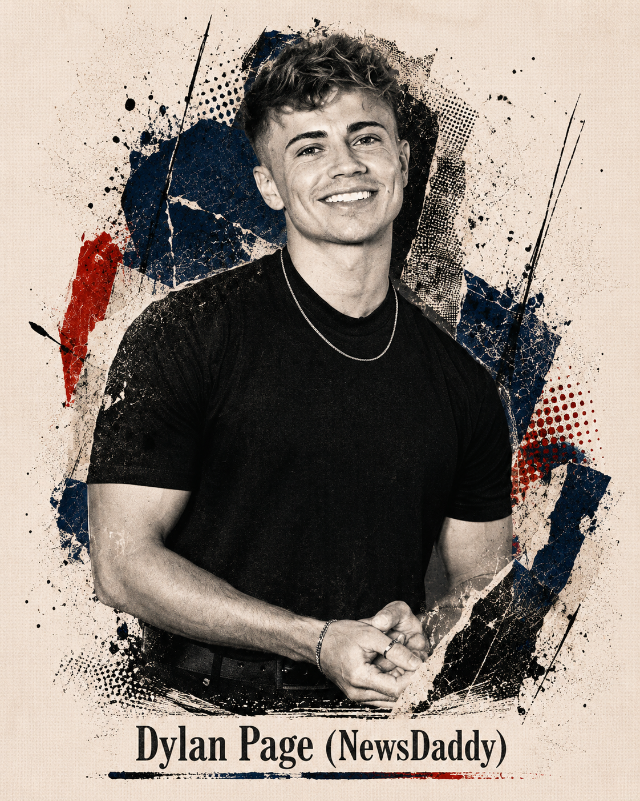
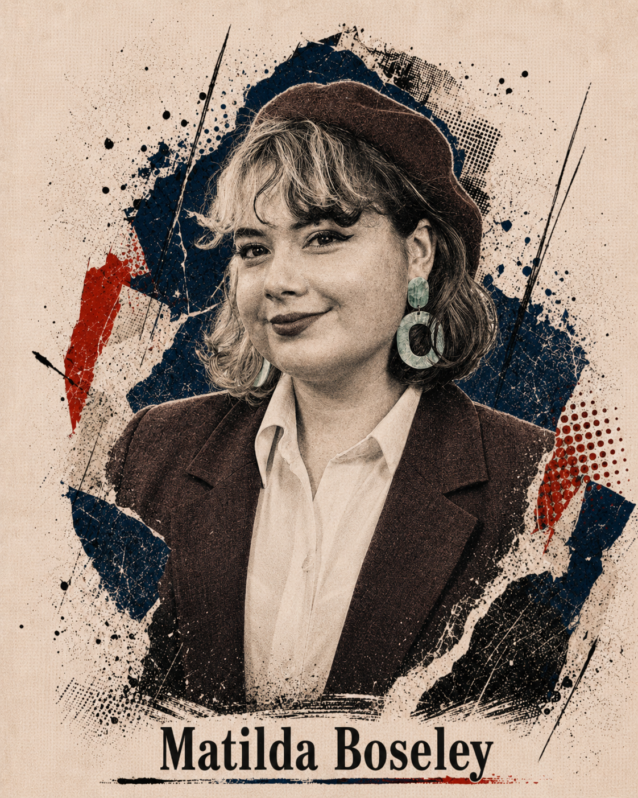
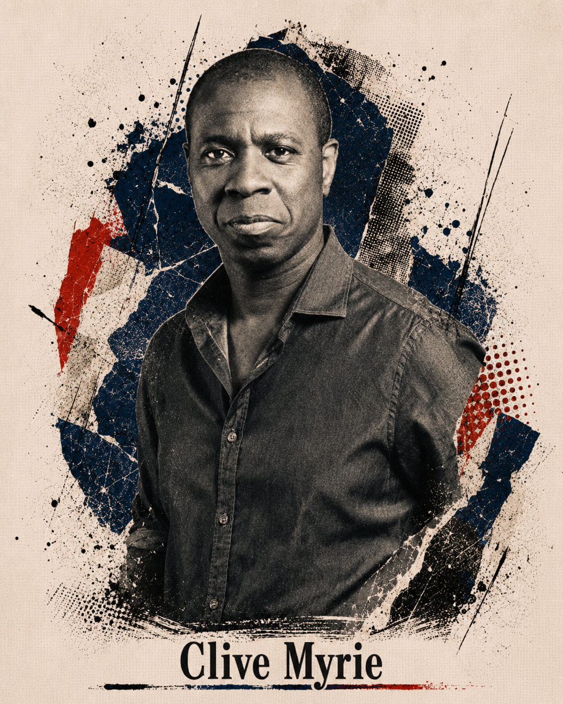

Group 04Editorial Leadership · Away Days 2026
18–19 May 2026
What we should be more worried about
Authoritarianism, legal threats and journalist safety — and how all three look different depending on which border you're working across.
Part 01 · Safety & expression

Part 01 · Safety & expression
Part 01 · Safety & expression
The political climate is inextricably intertwined with legal risk.
In a borderless digital world, you are only as strong as the weakest jurisdiction.
The process becomes the pain. Excessive litigation costs and time burdens seek to drive newsrooms toward self-censorship, effectively silencing public interest reporting.
Legislative pushback is gaining ground. New bills in Chile and Zimbabwe, combined with UK "Open Justice" and transparency initiatives, are fostering collaboration between the media and strengthening journalist safety and digital protection.
Part 01 · Safety & expression

What we should be more worried about
The dangers, the open questions, the limitations — and the possibilities we're not yet making enough of.
Part 02 · Artificial intelligence
Synthetic authorityLLMs collapse nuance, rarely show sources clearly, surface most common not most true
Reality loopsModels are persuasive because they feel reasonable
Invisible editorial powerChatbots don't tell you what they omit and how they rank information
Part 02 · Artificial intelligence
The Guardian is not just a source of facts, but it is a model of thinking in public.
Journalism ought to show: what we know; what we don't; what's contested; how was this claim was verified; label AI-assisted content; publish internal standards; "show your working".
Visibly restrain and say why — don't just silently adopt LLMs.
Part 02 · Artificial intelligence
The audience will increasingly encounter Guardian journalism through the lens of someone else's AI.
Readers experience a version of Guardian journalism — without exposure to the Guardian.
Part 02 · Artificial intelligence
As synthetic content floods the information ecosystem, risks move upstream into newsgathering and editing.
Primary sources
AI hoaxes: fake images, documents, quotes.
failure point 01
Verification
Synthetic consensus: repeated AI errors look corroborated.
failure point 02
Drafting / editing
Tool errors: hallucinated facts, bad summaries.
failure point 03
Publishing
Visible mistakes damage trust in the brand.
failure point 04
The response
Verified reporting, transparent sourcing, accountable editors, human-focused stories, direct audience relationships — both online and in person.
The choice: be quoted by platforms — or chosen directly by readers.
Part 02 · Artificial intelligence
Modern models have moved beyond word prediction. They plan approaches before generating a response. Recent models have blown through existing evaluations.
The "Harness" is the execution environment. By giving models access to tools (terminal, CMS, browser, applications), we move from AI that talks about work to AI that actually does it.
The synergy of Brain + Harness creates an "Agent." It doesn't wait for your next prompt; it creates a plan, uses tools, and works in a loop until the goal is achieved.
Part 02 · Artificial intelligence
What we should be more worried about
Changes and risks in the wider landscape — and how we might respond to them while there's still time to choose.
Part 03 · External shifts
Part 03 · External shifts



Part 03 · External shifts
Part 03 · External shifts
Over to you